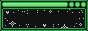

The Software Stack
- Host: Github Pages
- Domain Name Registrar: PorkBun
- Build Tool: 11ty
- Deployment Pipeline: Github Actions
- Text Editor (For longform writing, not code): Obsidian
- Code Editor: I bounce between VSCode, Cursor and Zed depending on my mood, and which computer I am working on.
How I Update My Site
All the hard work in updating my website is taken care of by 11ty. I have a section below how I manage my 11ty templates.
My blogposts start written in Obsidian where all my knowledge lives. Whenever I have written something that I think is worth publishing, I simply drag and drop the .md file to Content folder in my websites repo.
If the post is just text then this is all that is needed, I compile using 11ty, Push the updates to github and the new post is up! If I have pictures in the post, these get broken in the process, so I need to manually pull each one across and re-link them. This is something I still need to figure out how to automate.
My 11ty Config
My 11ty config was mostly inspired by this blogpost. All my templates are written in liquid, and almost all my pages are written in Markdown, (since that is what Obsidian supports). How I get it from Obsidian to my website is documenter here
The general idea is to push all the "web dev" and html into my templating, so my writting can be read in plain txt. If I absolutely need to do some advanced formatting, you can still slip a bit of inline css into markdown anyway.
Automations / Templates I'm Proud Of
Adding Books To My Library Page
The /Library page is generated automatically for me from a json file I update whenever I feel like adding a book. (I don't add every book I finish, only the ones I feel like talking about). This idea came from Anhvn's Blogpost / Meta Page. Essentially we use what eleventy calls data files to act as variables in the template.
For example, here is the entry for Three Body Problem:
{
"name": "The Three-Body Problem",
"author": "Liu Cixin",
"rating": "⭐",
"thoughts": "I never thought I would take \"Astro-socialogy\" as a serious concept before reading this. Read the whole series, seriously.",
"date": "2023-08",
"fiction": true,
"coverImg": "/Assets/book-covers/three-body-problem.jpg"
},
There is also a tiny bit of logic in the template to turn the numeric date into a written date because I think it looks nicer.
Automatically generating the OPML files for my RSS Starterpacks
Much like the /Library my RSS Starterpacks are built from a .json file I keep in my project. The cool part is the OPML files that users can download and import into their RSS reader. To do this I created a subdirectory to keep all my OPML files in, and then a liquid template StarterPack.opml.liquid. From there 11ty neatly bundles up all the info from my json files into nice OPML files for my users to download.
For example, my comics starter pack looks like this in json:
{
"name": "Web Comics",
"description": "Sometimes you need pictures. ",
"feeds": [
{
"title": "XKCD",
"description": "Famous webcomic amongst science types. Literally every science degree person I know loves it.",
"xmlURL": "https://xkcd.com/rss.xml",
"htmlURL": "https://xkcd.com"
},
{
"title": "Poorly Drawn Lines",
"description": "A webcomic with humor and wit.",
"xmlURL": "https://poorlydrawnlines.com/feed",
"htmlURL": "https://poorlydrawnlines.com"
},
{
"title": "Saturday Morning Breakfast",
"description": "A webcomic with a mix of science, and humor.",
"xmlURL": "https://www.smbc-comics.com/rss.php",
"htmlURL": "https://www.smbc-comics.com"
},
{
"title": "The Oatmeal",
"description": "One of the most famous webcomics of all time. He also made exploding kittens and unstable unicorns if you are into board games.",
"xmlURL": "https://theoatmeal.com/feed/rss",
"htmlURL": "https://theoatmeal.com"
}
]
It's OPML file looks like this:
<?xml version="1.0" encoding="UTF-8"?>
<opml version="2.0">
<head>
<title>Web Comics RSS Feeds</title>
<dateCreated>Tue, 13 May 2025 17:05:24 Australia/Sydney</dateCreated>
<ownerName>Caffeine And Lasers</ownerName>
</head>
<body>
<outline text="Web Comics" title="Web Comics">
<outline type="rss" text="XKCD" title="XKCD" xmlUrl="https://xkcd.com/rss.xml" htmlUrl="https://xkcd.com" description="Famous webcomic amongst science types. Literally every science degree person I know loves it."/>
<outline type="rss" text="Poorly Drawn Lines" title="Poorly Drawn Lines" xmlUrl="https://poorlydrawnlines.com/feed" htmlUrl="https://poorlydrawnlines.com" description="A webcomic with humor and wit."/>
<outline type="rss" text="Saturday Morning Breakfast" title="Saturday Morning Breakfast" xmlUrl="https://www.smbc-comics.com/rss.php" htmlUrl="https://www.smbc-comics.com" description="A webcomic with a mix of science, and humor."/>
<outline type="rss" text="The Oatmeal" title="The Oatmeal" xmlUrl="https://theoatmeal.com/feed/rss" htmlUrl="https://theoatmeal.com" description="One of the most famous webcomics of all time. He also made exploding kittens and unstable unicorns if you are into board games."/>
</outline>
</body>
</opml>
Learning More
My Tutorials
I have extra bits and pieces about webmastery that I have written in the form of blogposts
Resources that got me started
